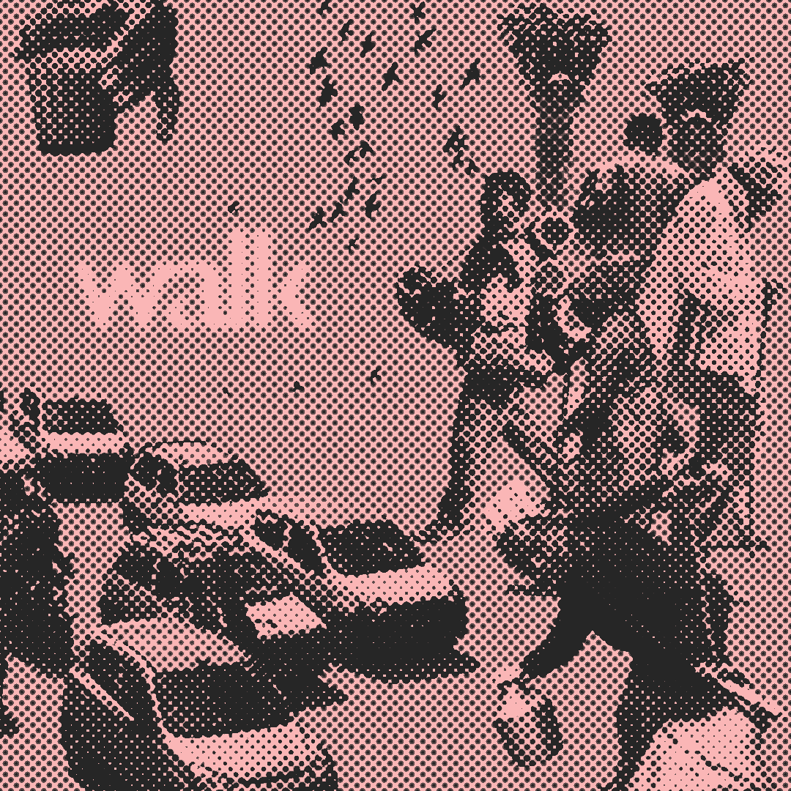

project_walk
I collected all the images from pexels.com (free to use license) stacked them in same
board and
tried to create a flow, where all of the subject match each other. This process
is more about I feel and less with the technicality.
I used pen tool in photoshop to cut subject from background and worked on there
composition.
I also adjusted color of the all images so they compilent each other.
The image below is the layer stack of the final image where i used curve tool,
hue/saturation for final toch
and I added text. To complete this image i added halftone
efffect to all the elements of the photo.
this is the final image:
